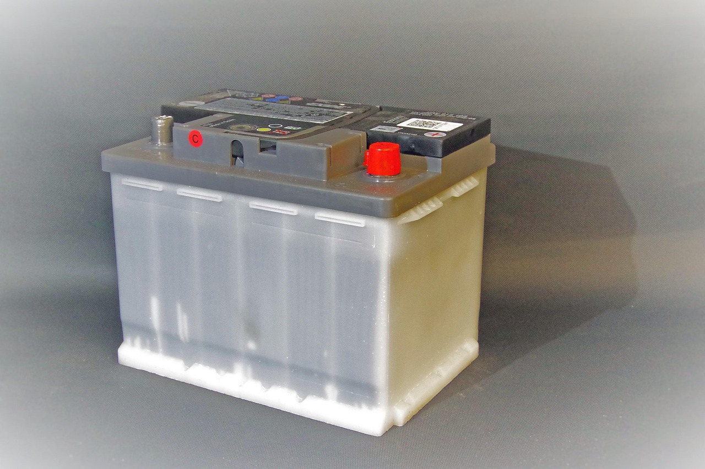
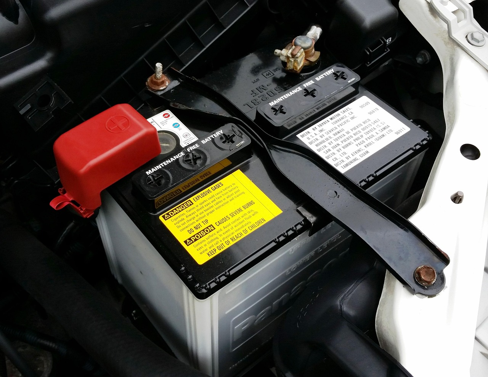

Várias marcas
O nome público da loja é Auto Baterias Multi Marcas “O Baiano”. Não listamos marcas específicas porque a loja não publica uma lista oficial.

Baterias na Miguel Rosa
Conhecida como O Baiano. Loja de baterias no bairro Macaúba.
Foto ilustrativa (Pixabay). No site final entram as fotos da própria loja.
Atendimento
O próprio nome da loja indica atendimento com várias marcas. Aqui estão o endereço, o horário e o WhatsApp publicados.
O nome público da loja é Auto Baterias Multi Marcas “O Baiano”. Não listamos marcas específicas porque a loja não publica uma lista oficial.
O telefone do Google é (86) 98855-0744. Um guia também traz o fixo (86) 3218-1793.
Endereço no Google: Avenida Miguel Rosa, 5399, CEP 64016-010. O cadastro de CNPJ / Solutudo cita o nº 5395, bem próximo.

A loja
A Auto Baterias Multi Marcas “O Baiano” fica na Avenida Miguel Rosa, 5399, no bairro Macaúba, em Teresina. O WhatsApp publicado no Google é (86) 98855-0744.
O e-mail alyssontaillan10@gmail.com e o telefone (86) 3218-1793 aparecem em guias empresariais ligados ao CNPJ 41.940.141/0001-71 (razão social Sinara Prado), com endereço no nº 5395. Usamos o 5399 do Google Maps como endereço da vitrine.
Não repetimos promessas de instalação grátis ou entrega que só aparecem em texto genérico de diretório. Avaliação pública no Google: 5,0 com 34 avaliações, no momento da pesquisa.
Quando ir
Horários do perfil da loja no Google (o cadastro da Página Amarela lista o sábado até as 14h; a prévia segue o Google).
A loja fica no Macaúba, sobre a Avenida Miguel Rosa, na zona Sul de Teresina. A área de entrega, se houver, deve ser confirmada com a loja.
Onde estamos
Av. Miguel Rosa, 5399 · Macaúba, Teresina - PI, 64016-010
Dúvidas
Em geral, de 2 a 4 anos, conforme o uso, o calor e o sistema elétrico do veículo. A loja pode indicar o modelo adequado — peça um orçamento pelo WhatsApp.
Dificuldade para dar partida, faróis mais fracos, alerta no painel e o carro que “morre” com mais frequência. Se não ligar, fale com a loja pelo WhatsApp.
Confirme pelo WhatsApp a forma de atendimento. Esta prévia foi montada com informações públicas; entrega, teste ou instalação, quando existirem, são combinados direto com a loja.
Av. Miguel Rosa, 5399 · Macaúba, Teresina - PI, 64016-010 Confira o mapa acima ou peça a localização no WhatsApp.
Diga o modelo do veículo e onde você está. A Auto Baterias Multi Marcas “O Baiano” responde pelo número que já aparece nas listagens públicas da loja.